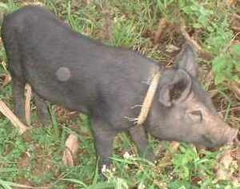
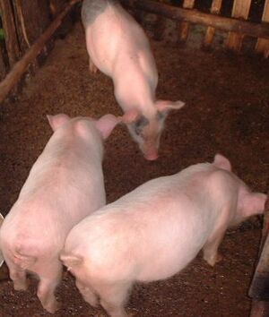

baketin  
/bakɔtin/
n.
“piglet”
n.
young pig
Ka baketin iyan ka anak te babuy, ka deisek pad ne babuy, kenè pad ne dakel wey ke sikan pad ilesut ne babuy.
Mallambeg-lambeg ka me baketin nu ra! Nekey bes ka impakeen nu?
You're piglets are fatty! What did you feed them?
Wrd.Gloss: piglet
Eng. young pig; piglet
Tag. biík
Ceb. baktín
Ilo.: búrias
OCM: Fauna (136)
DDP: Hoofed animals (1.6.1.1.3), Animal life cycle (1.6.3)
Online dict status: -
Usage level: M
Updated by: RJH,AAA,RUL,NJK
Last updated: 13/Oct/2009
"Baketin" in reader "Ka ngaran te me anak"
"baketin" in text "Examples of Anit"
This page last updated: 03-Jan-2020
Copyright © 2009-2014, Matigsalug Language Christian Association, Inc